通过 DedeCMS 学习 php 代码审计
本文最后更新于：3 个月前
0x00 前言
织梦(DedeCms)也是一个国产内容管理系统，曾经爆出过众多漏洞，甚至还有人开发了dedecms漏洞一键扫描器
DedeCms和PHPCMS活跃的年代差不多，大概是2015年前，目前也都少部分人在使用
DedeCMS 目前最新版是dedecms v5.7sp2，最后更新时间大概为2018年
这里就不记录安装过程了，通过安装过程获知默认后台密码是admin/admin
0x01 全局分析
个人习惯是对程序做一个比较明晰的全局分析，至少要知道程序的入口文件是什么流程，程序有多少入口文件，对外部数据有什么全局处理方式等等
对dedecms对全局分析时，首先选择了根目录下的index.php，慢慢分析会发现，dedecms是一个多入口文件的形式，不过每个入口文件的流程都大致相同。
通过全局分析得知dedecms大致有3个主要功能，也通过不同的入口文件进入
1）网站前台首页，没有什么功能点
2）会员中心，默认是关闭该功能的，需要后台打开
3）管理员后台
跟踪前台index.php的流程
首先跟一遍index.php的流程，index.php首先会加载common.inc.php，就先看看这个文件会做什么
include/common.inc.php
1 | |
common.inc.php 做了很多程序的初始化工作，代码审计时需要重点关注程序处理GPC这些外部数据的方式
common.inc.php 全局处理数据的代码：
1 | |
可以看到这个时期的DEDECMS也是使用了$$ 直接注册了GPC的变量，有可能存在变量覆盖的问题
uploadsafe.inc.php
这里再关心下文件上传的安全函数
include/uploadsafe.inc.php
$cfg_not_allowall 为上传文件名后缀的黑名单，后面具体分析限制的逻辑
$imtypes 为一些图片的MIME类型
1 | |
这里结合实际例子来分析上诉代码，上传一个名为2.jpg的正常文件，$_FILES数组如下图
uploadsafe.inc.php会注册$_FILES中数据到全局变量，在实例中便会注册以下变量
1 | |
然后先看第一个文件上传的限制：
1 | |
第一个if语句块：
条件1：
$_FILES[$_key]['name']即2.jpg，若上传的文件名不为空，该条件为真条件2是个或条件，满足其一即可
- 条件2.1：
$_FILES[$_key]['name']即2.jpg，若后缀名在黑名单中该条件为真 - 条件2.2：
$_FILES[$_key]['name']即2.jpg，若没有符号.，即无后缀文件，该条件为真
- 条件2.1：
通过第一个if判断会进入第二个if判断，DEDEADMIN常量未定义会直接退出程序。全局搜索了DEDEADMIN常量，如果是在后台模块，该常量会在dede/config.php就已经定义了。如果在前台首页或者更用户中心页面，该变量没有定义
所以第一个文件上传限制的是：如果用户上传的功能点不在后台，上传的文件将会受到黑名单限制
再来看看第二个文件上传的限制：
1 | |
若 $_FILES[$_key]['type'] 即image/jpeg，在$imtypes中，则进入下一层判断。
$$_key此时为上传的临时文件，来自$_FILES[$_key]['tmp_name']，临时文件将通过getimagesize()来获取图像信息，作为安全人员，应该要对这个函数敏感一点了，getimagesize()识别到图像时，会返回一个包含图片信息的数组，当传入的文件不为图像时，会返回false，但是该函数可以通过伪造文件头绕过
所以第二个文件上传的限制意图为，当上传的文件MIME类型为图片时，将会通过getimagesize()二次验证传入的是否为图片
综上，可以看出这个底层的文件上传安全函数并没有限制的很死，大概的限制意思为：如果用户上传的功能点不在后台，上传的文件将会受到黑名单限制。如果当前文件为图片类型，则会通过getimagesize()再次判断文件是否为图片类型。若上传的文件在后台，MIME类型不为图片则没有限制
加载视图类文件
dedecms还会加载一个视图类文件include/arc.partview.class.php，里面定义了一个视图类class PartView
然后就会实例化一个视图加载类$pv = new PartView();，然后利用$pv去加载html这种静态模板，呈现到网页中。这里算是把视图和程序分开了
至于具体怎么实现的，因为和代码审计相关不大，而且我也没有看懂，这里就不讲究它的逻辑了
小结
整个流程下来感觉dedecms符合那个时代的cms特点，而且也是全局注册了外部变量。dedecms有特点之处在于使用视图类把html和php文件划分。但index.php文件明显只是一个静态文件，没有较多功能的实现，也没有像phpcms那样index.php作为入口文件负责接收请求转发到其他功能代码中
那程序中的功能到底是怎么实现的呢？
最后黑盒测试一下前台的功能点，功能点不多，也明显看处前台是一个多入口处理，每个功能是分开的
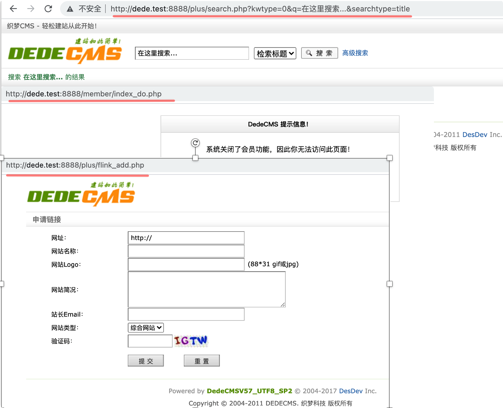跟踪后台流程
dedecms的后台入口位于dede/index.php，默认后台目录为dede，官方建议修改后台目录，在寻找dedecms的后台目录时可以在字典加上dede爆破一下
dede/index.php
1 | |
后台入口文件的初始化主要加载dede/config.php，这里重点关注下这个文件
dede/config.php
dede/config.php
可以看到config.php也会加载common.inc.php文件，从而处理了外部数据
同时需要关注的是 config.php 会验证用户的登陆情况，所以后台文件基本都会包含这个config.php
1 | |
通过iframe构造完整后台页面
不过从上面来看后台入口文件还是很单薄，没有实现什么具体功能，也没有转发请求的功能。然后我就使用谷歌调试工具看了下dedecms后台到底加载了哪些文件，原来才发现这个时期的cms还在使用iframe框架，dedecms后台入口文件通过使用iframe框架加载了菜单地图文件和管理后台主体文件，分别为 dede/index_menu.php 和 dede/index_body.php
上图的代码来自index.php加载的templets/index2.htm文件
dede/index_menu.php 和 dede/index_body.php 通过iframe被嵌入在index.php页面中，可以看到的是dedecms在后台基本还是使用的多入口文件去处理每个功能，只是使用iframe框架让所有功能在index.php页面下显示了而已
小结
通过全局分析，感觉dedecms这个系统还是比较”老气“的，和phpcms的处理方式还是有很大不同的，感觉上phpcms的处理更加接近mvc的思想，虽然看到dedecms也声称做了mvc的架构，菜鸡的我是否还看不到那一层
0x02 漏洞审计
本次将采用结合功能点进行代码审计的思路，试一试这种思路的特点
任意文件上传
普普通通的绕过
后台:【核心】-【常用操作】-【所有档案列表】-【添加文档】，该功能可以发布文章，而且具有文件上传的功能
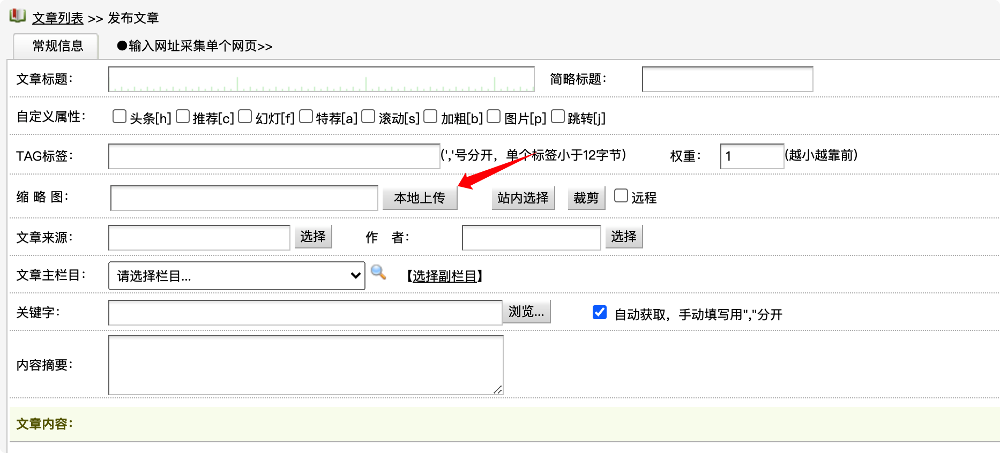该处首先具有前端限制，上传 .jpg 后缀文件，结合brup抓包，发现处理上传功能的文件为dede/archives_do.php
然后结合调试，来看看具体代码
dede/archives_do.php
入口文件通过 config.php 会实现权限认证和一些外部参数过滤注册
我们这里上传文件会带有 $_FILES 参数，上面通过全局分析得知会触发uploadsafe.inc.php的过滤
过滤后，通过AdminUpload()实现最终文件上传
1 | |
include/helpers/upload.helper.php
最终实现文件上传的AdminUpload()来自upload.helper.php
传入AdminUpload()的$ftype固定为imagelit，则一定会进入对应的检测判断
在检测判断代码中，$sparr定义了一个MIME Type白名单，若上传文件的MIME Type不在白名单中直接退出，MIME Type我们可控，所以这里一定要设置MIME Type为图片类型
但这里要注意的一点是，当MIME Type为图片类型时，在安全过滤文件uploadsafe.inc.php检测中，还会通过getimagesize()再次判断文件是否为图片类型，不够这里我们也可以绕过
1 | |
最后梳理一下，该功能点，系统只做了两个限制，MIMI Type为图片类型，可控。但MIME Type为图片类型时会通过getimagesize()检测，这里也可绕过。下面将来复现一下，看是否可以利用
漏洞验证
保证Content-Type为图片类型，构造图片的文件头，绕过文件上传的限制，并且会返回上传文件名和路径
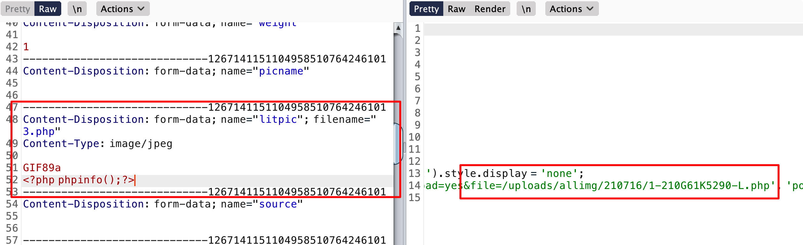访问这个文件，完美
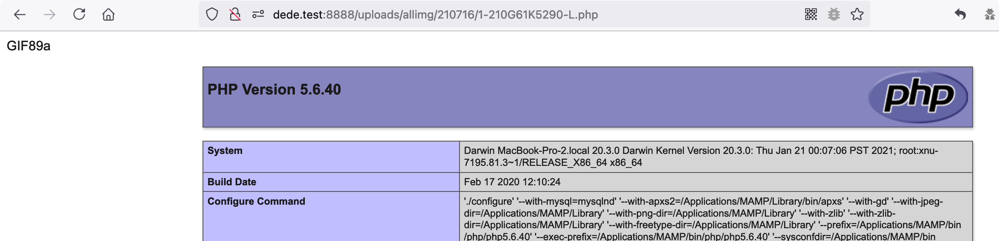小结一下：分析这一大堆，似乎还没有黑盒测来的快。。。一般黑盒直接来个GIF89a可能就中奖了
尴尬的文件上传
接着看看后台有什么功能点，然后又发现一个文件上传的位置：【核心】-【常用操作】-【附件管理】- 【文件式管理器】
突然发现这里竟然可以直接上传任意文件。。。。这个系统这么刚的吗？
看了半天代码很尴尬，然后我就不太想看后台的文件上传了。。。。
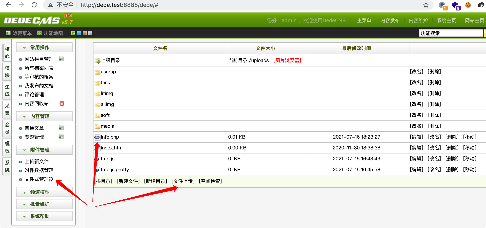有趣的文件上传
后面翻阅dedecms历史漏洞，发现会员中心处存在一个文件上传漏洞。后面仔细研究了一下，其实也只有管理员权限才能上传，实际利用鸡肋，有管理员权限了不如直接进入后台任意文件上传，不过这个漏洞产生的原因可以学学
漏洞位于会员中心处，需要在dedecms打开会员功能，另外需要使用管理员账号打卡会员中心的页面
进入member/article_add.php发布文章，选择下面的富文本编辑器插入图片
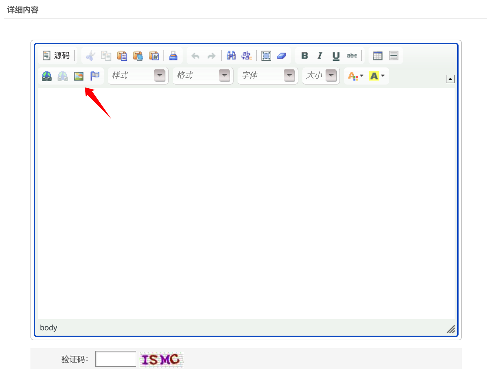选择好文件并上传抓包
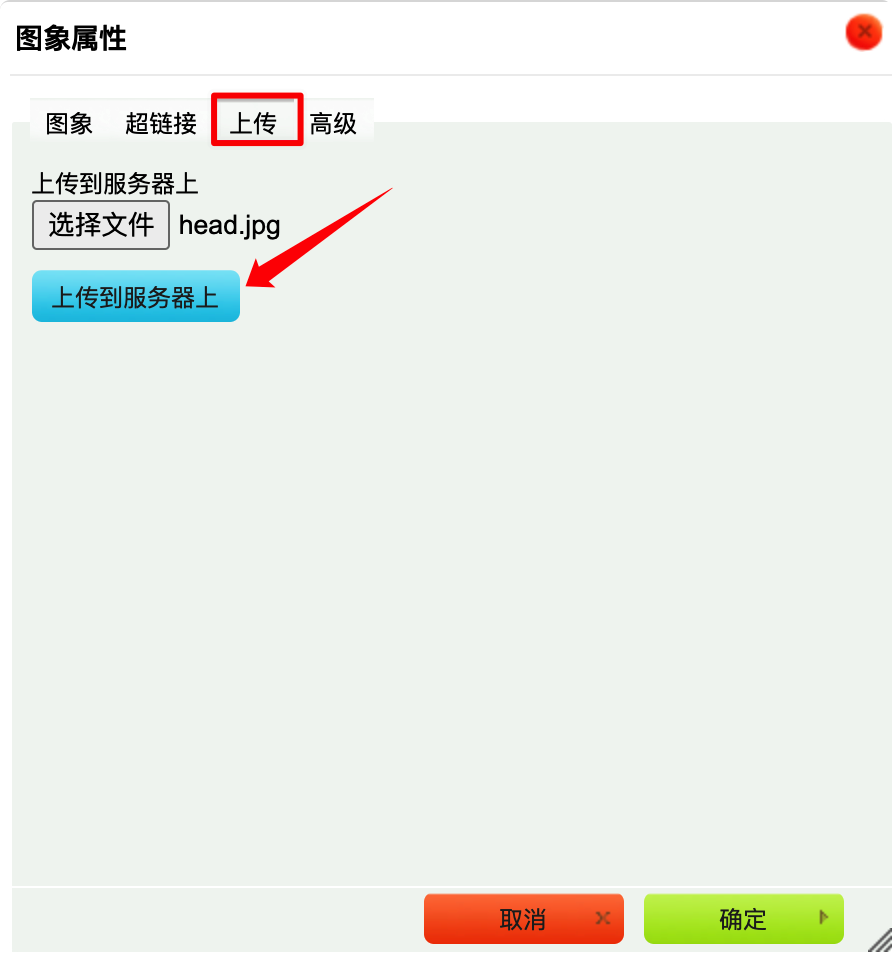处理该文件上传的文件为select_images_post.php，下面具体看看代码
include/dialog/select_images_post.php
看代码大致知道系统只允许上传图片格式的文件，然后具体有3个限制条件：
- 加载
include/dialog/config.php，该文件会验证管理员身份，同时config.php会加载common.inc.php做基础的文件上传过滤。由全局分析知道，我们此时没有位于管理员目录，上传文件后缀名有黑名单限制，不能为php，目前知道服务器只解析php后缀文件
但在下面第二行代码，会去除一些特殊符号，那我们可以上传p*hp这样的后缀，可以绕过上面的判断，然后再这一步正好又变成了能解析的后缀，漏洞关键点就在这里
$cfg_imgtype为jpg|gif|png，但这里匹配十分轻松，只要存在.jpg这样的字样就能绕过，并没有限制是后缀名最后对mime type类型做了检测，最终上传文件
1 | |
xss
测试发现还是黑盒好测一点，在dedecms后台还是存在很多xss的，本次是在黑盒测试后，在回头审计代码的问题，其实这样白盒审计意义不大，主要记录下思路
因为dedecms是多入口文件，每个入口文件都需要包含具有全局过滤函数的文件来判断外部数据的安全，如果发现有的文件没有包含这样这种文件，那么这个入口文件可能就存在相关漏洞
在全局分析中发现并没有对外部数据做xss全局过滤，另外注意到dedecms具有视图类负责显示输出，封装了很多输出的功能，在平时白盒审计xss漏洞需要注意echo，innerHTML这类输出到前端的关键词，但在dedecms中还需要注意视图类封装的输出函数
qrcode.php
qrcode.php及加载的文件都没有做xss过滤，通过common.inc.php会注册全局变量
$id只能为整数类型，$type类型可控
加载模板qrcode.htm，利用视图类格式化输出$id, $type的值，$type可控，这里就存在xss漏洞
1 | |
可以看到这里的触发点$dtp->SetVar('type',$type);，然而在seay这种代码扫描工具中是不会在意这些点的，同样有些框架对sql操作也做了很好的封装，如果只是依靠seay的结果来做代码审计，可能会忽略掉很多关键点
最后有图有真相
1 | |
url 重定向漏洞
seay似乎没有 url 重定向漏洞的扫描，不过该漏洞审计也比较简单，主要关注能重定向的一些关键词，再看重定向地址是否可控
这里看一个dedecms出名的url重定向漏洞，网上有很多讲解，xray都有poc
plus/download.php
对$link做了base64解码
程序中有一个很奇怪的限制，in_array($linkinfo['host'], $allowed)，然而download.php中却没有$linkinfo这个参数
1 | |
dedecms后台也有一些url重定向漏洞，这里就不多关注这个洞了
会员中心任意用户密码修改
这也是dedecms比较出名的一个漏洞，如果通过黑盒测试，可能并测不出这个漏洞，此处漏洞最好的方式就是通过灰盒的方式测试
功能点位于会员中心找回密码处，dedecms默认是关闭会员中心的，需要在后台开启会员中心，为了方便测试，开放了用户注册
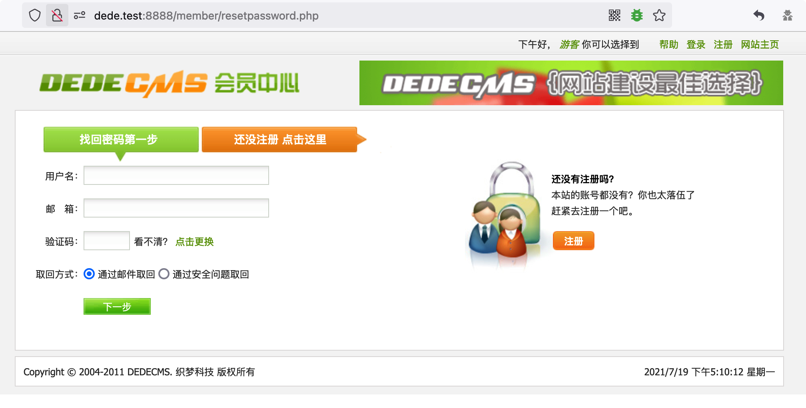来看下关键代码：
member/resetpassword.php
1、加载 member/config.php，注意这个 config 文件位于 member 目录，不同于全局分析的 config 文件，这个文件会检测用户在用户中心模块的登陆情况，查询的数据表为 dede_member，而后台模块查询的数据表是 dede_admin，要注意区分开dede的各个模块查询的数据表和包含的文件
可以看到 resetpassword.php 主要有4个处理逻辑，由 $dopost 控制，$dopost可控
1）$dopost默认为空，进入第一个if语句，会加载resetpassword.htm，用于显示找回密码的页面
2）$dopost == "getpwd"，进入第二个处理逻辑，这是找回密码第一步默认处理逻辑，
3）$dopost == "safequestion"，进入第三个处理逻辑
4）$dopost == "getpasswd"，将会进入找回密码第二步
1 | |
2、抓取找回密码第一步的请求包，默认dopost为getpwd
进入 getpwd 的if语句块，如果设置了密码会加载 resetpassword3.htm 页面，这是输入安全问题的表单，会提交$dopost == "safequestion"，则进入第3个处理逻辑
没有设置安全密码会退出程序，$dopost=="getpwd" 似乎走不通，但参数都可以控，可以考虑直接进入$dopost == "safequestion"
1 | |
3、关注 $dopost == "safequestion" 的if语句块，$row['safequestion'] 为数据库查询用户设置的安全问题，如果没有设置则为空，然后这里使用 == 弱类型比较，有可能绕过这里的判断
1 | |
当用户没有设置安全问题时，数据库默认的 safequestion="0" , safeanswer=""，在php中这种数据在弱类型比较很容易相等的
safeanswer="" ，传入 $safeanswer 为空即可弱类型相等
safequestion="0" ，但是不能传入 $safequestion 为0，这样会导致 empty() 判断为空，最终被赋值为空，这里利用了一个知识点，记录下：
==在php中当左右都是只由数字组成的字符串进行弱类型比较时，会转换成数字比较==
1 | |
所以传入上面其中一个都可以绕过判断，最终的post的数据修改如下，其中id设置为任意值就可以修改为任意用户，id=1默认为admin用户，不过amdin用户在会员中心模块默认不能登陆，意义不大
post 数据的POC：
1 | |
发送次数据包后，在 dede_pwd_tmp 表中会生成临时的数据，其中pwd为8位随机字符串的key通过md5加密后的值
4、绕过弱类型判断后，会返回一个地址
注意里面的id和key参数，这里的key为上面的pwd在md5加密前的值，id为上面的mid，也对应了dede_member表中的用户，通过这两个值，保证在找回密码处能准确修改对应用户的密码
1 | |
进入这个地址，注意修改下实体编码，然后会进入找回密码第二步，然后直接修改密码就可以了
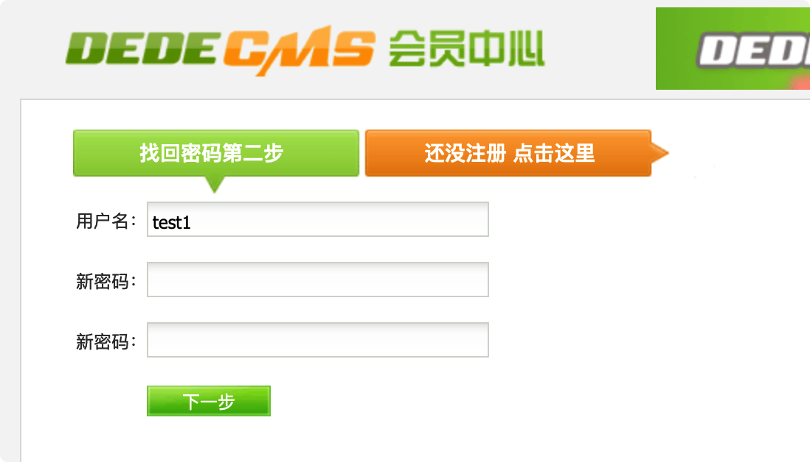小结：最终梳理下来，这里其实就是在用户没有设置密码问题时，后台数据库默认保存为空，并且后台在进行密保问题判断时采用弱类型比较，导致可以绕过，最终结果是，凡是没有设置密码问题的用户，都有密码被任意修改的风险
会员中心任意用户登陆
会员中心模块的入口文件为 member/index.php ，在全局分析的时候并没有分析这个入口，但逻辑应该也大差不差
这里简单分析下会员中心模块入口文件判断用户登陆状态的关键逻辑，一般会先判断用户是否登陆，如果登陆则呈现用户界面。如果未登陆，则跳转到登陆接口，等待用户输入登陆凭证并验证，验证通过后，给当前用户记录cookie信息，用户后续使用cookie正常访问
在dedecms中会员中心模块的入口文件差不多也是这个逻辑，dedecms主要使用include/memberlogin.class.php中MemberLogin类来处理这些逻辑，下面来具体看下代码
入口文件逻辑
入口文件主要分为3个逻辑处理，首先通过$uid可以查看对应用户的会员空间，$uid对应数据表dede_member中的userid，即用户名
当
$uid为空时，首先会判断用户的登陆状态，如果未登陆就加载登陆框，如果已经登陆，则展现对应用户的个人主页当
$uid不为空时，会加载config_space.php文件，其中这个文件会通过GetUserSpaceInfos()获取到$uid用户的空间信息
这里还需要注意 $last_vid ，该值来自于cookie，可控。当 $last_vid 为空时，最终将等于 $uid，都为可控参数。而 $last_vid 最终会被写入到cookie中
1 | |
会员空间信息的加载
这里首先看下第三个逻辑处理，会员空间主要通过config_space.php文件加载，具体代码如下：
- 会员空间的信息主要通过
$uid在数据库中查询得到，其中$uid为用户名信息 - 当查询结果为空时会退出程序
1 | |
账号登陆后cookie生成方式
用户登陆的逻辑这里就先不看了，主要关注下cookie是怎么生成的
当用户账号密码验证成功后，会有一个保存cookie的操作，对应的是MemberLogin类中的 PutLoginInfo() 方法
1 | |
跟踪下 PutCookie() 方法，发现将会生成 DedeUserID, DedeUserID__ckMd5 的cookie参数，这里关注一下后面会使用
DedeUserID 的值来自用户的uid，其中 DedeUserID__ckMd5 来自用户的uid和加密cookie值的16位md5加密值，
$cfg_cookie_encode 好像是安装dede后随机生成的值，用于加密cookie。不同的dedecms程序这个值不同，一般情况下认为该值是不可控，不可知的。正是利用这一点，程序生成的DedeUserID__ckMd5基本不能伪造，dedecms便可以放心的使用cookie去识别用户的身份
1 | |
这里需要知道的是这里的uid来自数据表dede_member中mid，所以uid这就就决定了用户的身份，dedecms默认在dede_member中会生成一个userid为admin，mid为1的用户
验证用户是否登陆过
用户中心模块在判断用户是否登陆会使用 MemberLogin 类的 IsLogin() 方法，该方法通过实例化的 MemberLogin 对象的 M_ID 值是否大于0为判断依据，大于0即为登陆状态
1 | |
然后查看一下 MemberLogin 对象实例化时的构造函数，M_ID 的值将来自于cookie，在获取cookie时会对用户身份做验证，==需要注意的是，通过认证后，M_ID还会通过GetNum()或intval()转换成数字类型，这是一个关键点，在后面将利用这一点把用户名转换成数字类型==
1 | |
GetNum()用于接收整数，GetCookie()用于获取cookie值，这里就知道M_ID大致来与cookie中的某个整数值，似乎可控的感觉，我们能想到的利用方式是通过控制cookie为不同的id值，造成越权漏洞
跟进 GetCookie("DedeUserID") 看看细节
$key传入的值为DedeUserID，$cfg_cookie_encode用于加密cookie
- 第一个if判断条件，
$_COOKIE['DedeUserID']和$_COOKIE['DedeUserID__ckMd5']有值即可 - 第二个if判断条件，
$_COOKIE['DedeUserID__ckMd5']等于使用$cfg_cookie_encode和$_COOKIE['DedeUserID']16位md5加密值相同即可
如果通过判断，M_ID将会等于cookie中DedeUserID的值，也就是对应用户id的身份
$_COOKIE['DedeUserID__ckMd5'] 为用户uid的md5加密值，没有dedecms的cookie 加密值是无法伪造这个加密值，也就是我们无法构造任意uid用户通过验证造成越权漏洞
1 | |
但是在会员空间信息加载时我们知道通过 $last_vid 也可以写入cookie，也能利用$cfg_cookie_encode加密数据，把这的加密数据放到GetCookie()中是能通过验证的
但是 $last_vid 只能为用户名，放到，如果直接将 $last_vid 转化为用户id，那么在会员空间信息加载时会因为用户不存在而退出程序。如果用户名和用户id相同则不担心了，但是系统限制了用户名不能过短
不过却可以利用intval()将用户名转换成数字类型，从而 $last_vid 可以为存在的用户名，也可以转换成任意用户的id
终于开始验证漏洞了
按需求，我们需要注册一个用户名，这个用户名在 intval() 转换后能为一个用户的id
1）注册一个名为 1admin 的用户，intval("1admin")将为1，我们将会操控到用户id为1的用户，然后利用 1admin 获取一个__ckMd5
1 | |
2）利用结果通过验证
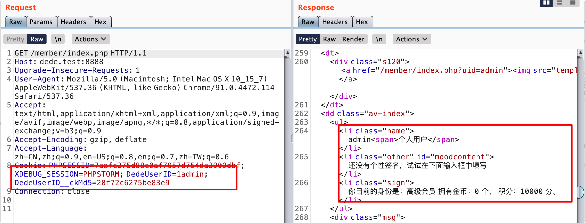这里有个有趣的利用点，注意了！直接通过登陆框登陆admin用户是进不了个人主页的，因为dedecms默认禁止admin用户登陆会员中心。如果通过上面的方法却可以实现amdin用户登陆，有个什么好处呢，会员中心具有修改密码的功能，如果是管理员修改密码，会同时修改掉后台dede_admin表的密码，这里就可以实现前台到后台的突破，而后台的任意文件上传就很轻松了吧
最后梳理一下流程，流程图如下：
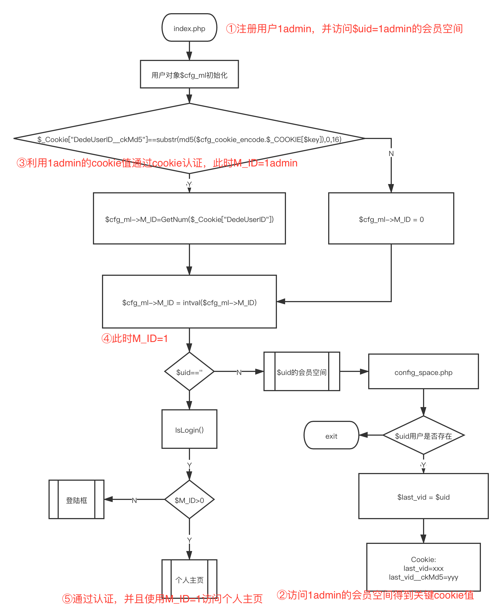0x03 小结
本次主要采用的是功能定向审计，发现这种方式对文件上传漏洞的审计效果还不错，该方式确实速度很快，不过也会忽略很多关键点，最后的感受是，代码审计时不一定只有一种审计方式，除了功能定向审计，我们还可以利用通读代码的方式去做粗略的全局分析，通过敏感关键词回溯去审计一些较难发现的漏洞
另外一个感受就是在登陆口找回密码这种具有一定逻辑的代码审计上，往往需要先梳理清程序的逻辑，如果具有一定的开发意识审计这种代码会快一些。
参考：
dedecms官网：http://www.dedecms.com/
Dedecms 最新版漏洞收集：https://blog.szfszf.top/article/25/
前台任意用户登录漏洞分析（修改admin后台密码）：http://blog.nsfocus.net/dedecms-loophole-2/
本博客所有文章除特别声明外，均采用 CC BY-SA 4.0 协议 ，转载请注明出处！